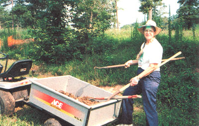
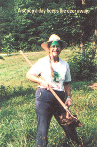

Nature's deer repellent, rhubarb in a basket and the perfect milk paint.
COUNTRY LORE
Here in the Southeast, we've never seen so many deer. Reports on television and in newspapers from many parts of the country report a widespread problem with deer invading even city yards and eating expensive plantings. I've found a simple, chemical free and inexpensive way to keep them from devouring my gardens and shrubbery.
Through the years, I've observed the feeding habits of cows and horses in our pastures and learned some basics. Cows will not graze where other cows have deposited their droppings. Horses, on the other hand, will eat where there is cow dung, but they won't eat grass in an area contaminated by horse manure. Interestingly, deer join horses in the pastures and seem to have the same eating habits, but I can never get close enough to them to see where they feed and where they don't.
So it happened that six years ago, when a new crop of asparagus emerged in my garden, the deer devoured it as quickly as it came up. I didn't know what to do. I put up an electric fence and it helped some, but the wiser critters soon jumped it and helped themselves. So one day, I sprinkled horse manure on part of the asparagus bed and left the other part of the bed alone. The next morning there was plenty of asparagus still sprouting from the manure covered area, but every shoot was eaten where there was no manure. Was it a coincidence, or did the deer just prefer the asparagus without manure? To find out, I covered the rest of the asparagus bed with horse manure and had no further problem with deer eating it that entire spring. Apparently deer, like horses, will not feed where there's horse manure. Since this discovery, I've routinely applied horse manure to my asparagus each spring and there hasn't been a deer problem yet.
In other parts of the garden, I stuck with chicken manure and cow manure for a while, and the deer kept coming. Last year, however, I decided to switch to horse manure as my universal fertilizer. It protected favorite deer foods like corn seedlings and early spring peas and it kept marauding nibblers from blueberry bushes. It protected everything.
To prove the point, I set out several new young azalea bushes early last spring. The only horse manure I had on hand was too fresh to put on the young, tender shrubs, and by the next morning, they were eaten almost to the ground. Later in the year, I moved some azaleas I'd rooted from cuttings. I put on a layer of ground leaves for mulch, then a light layer of aged horse manure and the azaleas have done very well. I've seen deer sniff and nuzzle them, but they have not taken a single nibble.
In our area, as in many areas, riding stables are happy to give folks manure free of charge, so long as they load and haul it away themselves. Some stables will deliver it for a reasonable price. Several friends have horses and I can obtain extra from them when our horse can't provide enough.
For those who don't have local access to riding stables or neighbors with horses, the next time you go for a ride in the country, take along some covered garbage cans (with liners if you prefer and keep on the lookout for horses. I've found that many folks who stable their horses in the winter are delighted to have someone volunteer to haul away the manure in the spring.
My husband makes fun of me when I go out with my garden tractor, trailer in tow, and using a flat shovel as a king sized pooper-scooper gather manure in die pasture. I tell him I'm going on a treasure hunt... for brown gold.
Joyce Tomanek
Clarkesville, Georgia
|
Joyce Tomanek of Clarkesville, Georgia, and her trailer full o' ""brown gold"" |
 |
 |